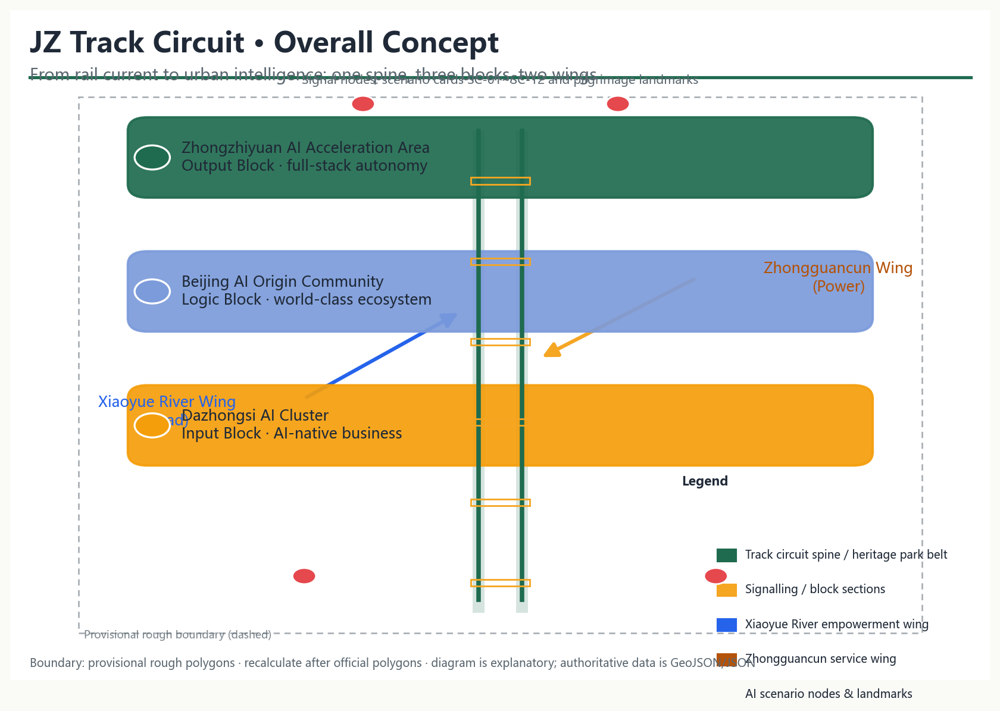
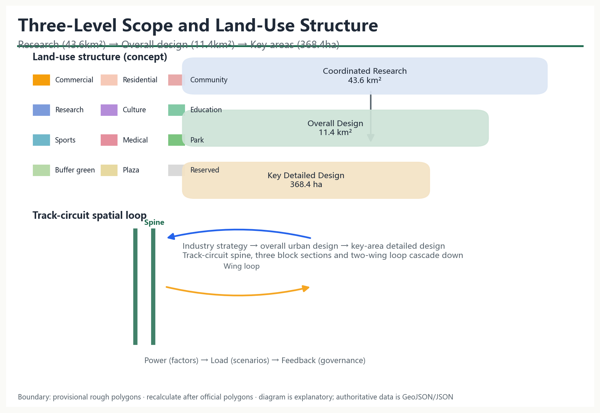
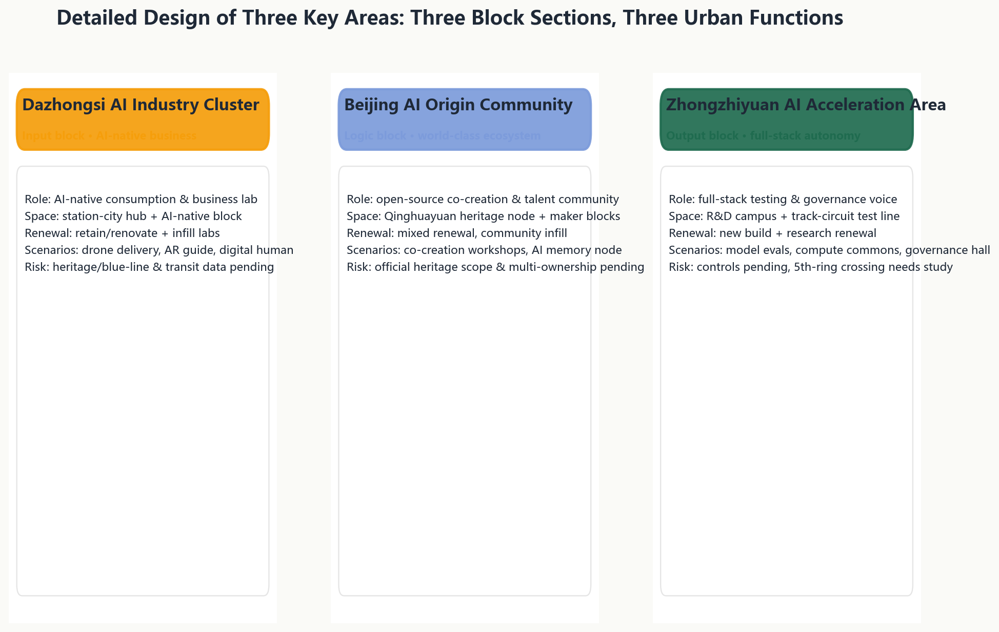
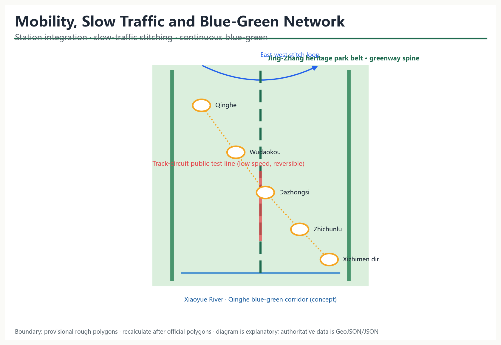
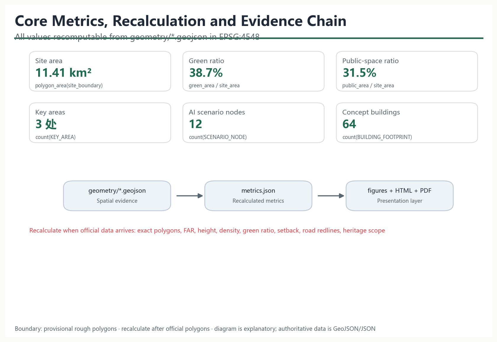

Jing-Zhang Track Circuit: From Rail Current to Urban Intelligence — Concept Design for the Centennial Jing-Zhang AI Innovation Belt
Taking the railway track circuit as its prototype, the proposal organises the Jing-Zhang heritage park corridor into a perceptible, testable and governable urban intelligence loop: one spine (track-circuit main line), three blocks (Dazhongsi input, Origin Community logic, Zhongzhiyuan output), and two wings (Zhongguancun power wing, Xiaoyue River load wing), supported by 12 AI scenario cards, 4 pilgrimage landmarks and an annual operation system.
Jing-Zhang Track Circuit: From Rail Current to Urban Intelligence
Design Basis and Source List
This proposal takes the Prequalification Announcement for the International Urban Design Open Call for the Centennial Jing-Zhang AI Innovation Belt (Haidian Branch, Beijing Municipal Commission of Planning and Natural Resources, 2026-05-09) as the governing project basis, covering the three scope levels, three key areas, announced areas, design tasks and deliverable depth 来源; the open-call taskbook excerpt for global AI agents adds the three positionings, five functions, three areas and two wings, six agent tasks and the unified boundary clause 来源. Industrial context draws on the "three areas and two wings" layout of the Beijing Science and Technology Commission and Zhongguancun Administrative Committee 来源 and Haidian's "1+X+1" modern industrial system 来源.
Source status follows the public source registry: the official announcement, taskbook and professional-standard snapshots support formal claims; the maintainer-derived provisional boundary is used only for generation, visualisation and intake self-checks 来源; Jing-Zhang railway history is background material for narrative only and supports no spatial-control claim 来源. Complete machine indexes of sources, metrics, standards, design depth and task coverage are held in sources.json, metrics.json, compliance_matrix.json, standard_matrix.json and design_depth_matrix.json.

Three-Level Scope Framework
The three levels cascade from industry strategy to overall urban design to key-area detailed design: the coordinated research area (~43.6 km²) addresses a world-class AI innovation ecosystem and future-city form; the overall design area (~11.4 km²) reaches regulatory-plan-level urban design depth; the key detailed-design area (~368.4 ha) covers, from north to south, the Zhongzhiyuan AI Acceleration Area, the Beijing AI Origin Community and the Dazhongsi AI Industry Cluster 来源 深度.
No official precise polygons are yet available in the site package; this proposal uses the maintainer-derived provisional rough boundary, checked against the announced areas in EPSG:4548 空间数据 指标. The provisional boundary is for concept generation, visualisation and intake self-checks only — not an official redline, approval basis or precise-area basis 来源; when official polygons are published, all layer areas, metrics, drawings and visuals will be recalculated 深度.

Coordinated Research Area: Industry and Future City Research
Overall concept, naming system and logo direction
Primary name: Jing-Zhang Track Circuit (JZ-TC). The track circuit was the railway's first sensing-signalling-interlocking-dispatching technology: rails are divided into block sections, current senses occupancy, signals communicate state, interlocking constrains conflict, and a control centre coordinates. A century later, the proposal reads this heritage main line as a city-scale track circuit: rails sense location, current carries state, signals express public meaning, interlocking sets boundaries, and dispatching becomes human-in-the-loop co-governance 标准.
The naming system forms a stable "one belt, three blocks, two wings, nodes" language: the belt is the track-circuit main line (Jing-Zhang heritage park belt); the three blocks are the input block (Dazhongsi AI Industry Cluster), logic block (Beijing AI Origin Community) and output block (Zhongzhiyuan AI Acceleration Area); the two wings are the Zhongguancun technology-service (power) wing and the Xiaoyue River scenario-empowerment (load) wing; nodes are numbered JZ-TC-01… and map to scenario cards and pilgrimage landmarks 深度.
Logo direction: two parallel rails form a "ren" (人) glyph and loop symbol with a signal-current curve at the centre, expressing autonomy, loop, signal and collaboration; visual identity uses railway signal semantics — signal green (open), amber (testing), red (human review required) — with rail grey and heritage brown; open geometric sans-serif typefaces are recommended. All identity, signage and event visuals are original concepts of this proposal with no third-party trademarks, fonts or images 来源.
Three positionings, five functions and the three-area-two-wing loop
The proposal answers the three positionings (centennial Jing-Zhang cultural belt, urban AI lifestyle experience belt, AI convergence innovation belt) and five functions (full-stack autonomous innovation, world-class AI ecosystem, AI+ scenario empowerment paradigm, smart vibrant AI city, global voice in AI governance). The three areas and two wings form a functional loop: the Zhongguancun wing supplies factors, capital and IP; Dazhongsi receives scenario demand; the Origin Community incubates the ecosystem; Zhongzhiyuan delivers full-stack testing and governance output; the Xiaoyue River wing returns outcomes to daily, perceptible city life 来源 来源.
Global AI ecosystem cases and transferable mechanisms
Seven publicly documented AI ecosystem cases are used to derive spatial, operational and scenario mechanisms; no unverified company lists, investment amounts or output figures are cited:
| Case | Transferable mechanism | Application in this belt |
|---|---|---|
| Zhongguancun Software Park (Beijing) | Gradient ecosystem of anchors + SMEs + public platforms | Origin Community co-creation workshops; Zhongguancun wing liaison hall |
| Stanford Research Park (US) | Spatial adjacency of university, industry and venture capital | College Road talent station; research-incubation mixed blocks |
| King's Cross (London) | Transport-hub renewal growing a knowledge community | Dazhongsi station-city hub and AI-native blocks |
| one-north (Singapore) | Park-public-space-testbed integration | Track-circuit public test line; heritage park belt |
| Kashiwa-no-ha (Japan) | Social experiments and operator-led scenario iteration | Xiaoyue River low-speed trials and operation mechanism |
| Helsinki Smart District (Finland) | Open data and public scenario procurement | Scenario-card applications; public review in the governance hall |
| Yunqi Town (Hangzhou) | Annual events accumulating developer community and brand | Four-season event system; JZ-TC brand IP |
The evidence is that a durable AI innovation belt is built on public space that carries testing, open mechanisms that attract talent, and brand events that accumulate community — not on park-stacking alone 来源 深度.
Overall Design Area: Urban Renewal and Regulatory-Plan-Level Urban Design
Spatial structure: one spine, three blocks, two wings, twelve nodes
The overall structure takes the Jing-Zhang heritage park belt as the track-circuit main line linking the three block sections, with the two wings forming a power-load loop and twelve AI scenario nodes distributed along the spine: "one spine, three blocks, two wings, twelve nodes" 指标 深度.
Land use and renewal framework
Land use is organised around the public spine with research-commercial-residential-service gradients: Zhongzhiyuan is research-led (0802), Dazhongsi is commercial (05) and cultural (0803), the Origin Community mixes research, education, housing and community services, and continuous parks (1401) and plazas (1403) line the heritage park 空间数据 标准. Buffer green (1402) runs along the boundary and reserved land (16) is kept for future AI services 空间数据.
The renewal framework follows a conceptual logic of retaining urban fabric, renovating underused space, infilling AI functions and reserving future expansion; existing-building data, ownership and demolish/renovate conclusions await official data and are directional only 深度 标准. FAR, height, density and other regulatory controls are missing and recorded as pending 指标.
Jing-Zhang heritage park belt
The spine overlays the park as green base with a low-speed, reversible, human-auditable track-circuit public test line and a signal-language wayfinding system, forming a composite belt of culture, public life, AI testing and governance review 空间数据 深度. Its alignment is inferred from the announcement text; the precise route follows official drawings and the built park design.
Detailed Design of Key Areas
Each key area is developed through positioning, spatial structure, building renewal, mobility, public space, AI scenarios and implementation risk, on the provisional polygons 空间数据 深度.

Zhongzhiyuan AI Acceleration Area (output block)
Positioned as the output block for full-stack autonomous innovation and global voice in AI governance: research campuses with a track-circuit test and validation field and the 5th-Ring AI governance hall along the spine; spatial structure combines research blocks, a public test line and governance nodes; buildings are conceptual R&D, lab and incubator volumes with both new build and research-led renewal 空间数据; mobility studies the 5th-ring crossing node and Qinghe-direction rail integration; risks include missing regulatory controls and the need for a dedicated crossing study.
Beijing AI Origin Community (logic block)
Positioned as the logic block for a world-class AI innovation ecosystem: drawing on Wudaokou, College Road and the Qinghuayuan station heritage, the community combines open-source co-creation workshops, an AI memory node and a talent station; mixed renewal and community infill preserve street fabric while inserting shared labs and talent housing 空间数据; station integration and slow-traffic stitching are strengthened; risks include the pending official heritage scope and multi-ownership coordination 空间数据.
Dazhongsi AI Industry Cluster (input block)
Positioned as the input block for AI-native business: a station-city hub organising an AI-native consumption living room and a future-consumption lab; space is primarily retained and renovated with infill lab buildings, and cultural land carries AI culture display 空间数据; Dazhongsi station integration and walkability are strengthened; risks include heritage, blue-line and traffic-safety constraints pending verification and the need for an operator to deepen the commercial mix.
AI Innovation Ecosystem, Personas, and AI+ Scenarios
User personas (6)
| Persona | Needs | Matching scenarios and spaces |
|---|---|---|
| AI startup founder | Low-cost space, compute, testing, funding links | Co-creation workshop, full-stack test field, liaison hall |
| University researcher / visiting scholar | Open data, cross-disciplinary exchange | Memory node, research blocks, international forum |
| Local resident (incl. elderly and children) | Accessibility, slow traffic, community services | Heritage park, community facilities, health navigation |
| Commuter | Rail transfer, dining, night vitality | Dazhongsi station living room, on-time transfer info |
| International developer / visitor | Multilingual guidance, verifiable experience, pilgrimage | Guide signals, signal tower, cultural timeline |
| City manager / community worker | Public participation, risk alerts, human review | AI governance hall, scenario review mechanism |
AI scenario cards (12; 4 are industry test/validation scenarios)
| ID | Scenario card | Location | Users | Data & privacy boundary | Human review | Operator | Layer/Node |
|---|---|---|---|---|---|---|---|
| SC-01 | Dazhongsi AI-native consumption living room | Around Dazhongsi station | Residents, commuters, visitors | Public/authorised footfall and feedback only | Recommendations can be turned off | Commercial joint operator | NODE-001 |
| SC-02 | Track-circuit public test line (test scenario 1) | Southern spine | Firms, developers, public | Low-speed, reversible, de-identified data | Approval and public notice per trial | Scenario operation platform | NODE-002, SVC-004 |
| SC-03 | Heritage park AI guide signals | Park belt | Visitors, residents | No biometrics; public POI only | Guide content human-reviewed | Culture operator | NODE-003 |
| SC-04 | Xiaoyue River low-speed shuttle test (test scenario 2) | Xiaoyue River wing | Elderly, children, reduced mobility | Booking-based; no in-vehicle recording retained | Attended shuttle | Community + operator | NODE-004 |
| SC-05 | Origin Community open-source co-creation workshop | Origin Community | Developers, startups | Code/data per open-source terms | Reviewed by community board | Developer community | NODE-005 |
| SC-06 | Qinghuayuan heritage AI memory node | Origin Community | Public, scholars | Public archival digital display | History expert review | Culture operator | NODE-006 |
| SC-07 | College Road talent station | College Road | Students, overseas talent | Minimal personal data | Human service fallback | Talent service centre | NODE-007 |
| SC-08 | Zhongguancun wing liaison hall | Zhongguancun direction | Firms, capital, institutes | Public project information only | Human confirmation of matches | Tech-service alliance | NODE-008 |
| SC-09 | Zhongzhiyuan full-stack test and validation field (test scenario 3) | Zhongzhiyuan | Model/embodied firms | Sandbox; graded evaluation data | Expert review of results | Public testing body | NODE-009 |
| SC-10 | 5th-Ring AI governance hall (test scenario 4) | Northern Zhongzhiyuan | Public, managers | Anonymous opinion; open process | Human-moderated review | Governance committee | NODE-010 |
| SC-11 | Track-circuit signal tower · public signal centre | Mid-spine | All | Aggregate operational status only | Human confirmation before release | Public operation centre | NODE-011 |
| SC-12 | Jing-Zhang cultural timeline gallery | Heritage park | Public, students | Public archives | Content review | Culture operator | NODE-012 |
All four test/validation scenarios state explicitly: low-speed trial, reversible, de-identified data, human review, and no conversion to operation without approval; immature technology is not presented as deployable at scale 来源 标准.
Land Use, Building Scale, and Retain-Renovate-Demolish Strategy
The conceptual land-use partition fully covers the submitted boundary without gaps or overlaps, with all areas recomputable in EPSG:4548 空间数据 深度. Core ratios: research (0802) and commercial (05) form the innovation base, parks (1401) and plazas (1403) line the spine, buffer green (1402) frames the boundary, and reserved land (16) allows future expansion 指标.
Building footprints are conceptual volumes (64) inside buildable land, expressing massing and function mix rather than existing building data 空间数据 指标. Total floor area, FAR, height, density, green ratio and setbacks are all pending official regulatory conditions 指标 指标. The retain/renovate/demolish/new-build logic is directional only — retaining fabric, renovating underused space, infilling AI uses and reserving land — and forms no parcel-level conclusion 深度.
Transport, Rail, Municipal Infrastructure, and Public Services
Mobility strategy covers station integration, slow-traffic stitching, gap repair and parking/transfer organisation: a fine-grid road network serves parcels beside the spine, and a greenway and walking-priority slow loop stitch the east and west sides of the heritage park 空间数据 深度; Qinghe, Wudaokou, Dazhongsi, Zhichunlu and the Xizhimen direction are conceptual transfer nodes with last-mile AI mobility services (on-time information, accessible navigation, low-speed shuttles) 指标.

Municipal and new infrastructure follows "edge compute, distributed energy, sensing poles integrated with utilities" as a direction: public-space components reserve edge-computing and sensing interfaces while conventional utilities keep normal capacity; no pipeline, load or engineering-feasibility conclusions are made 深度. Public services follow conceptual layouts of community service (0702), education (0804), sports (0805) and medical (0806) land, pending facility baseline data 空间数据.
Blue-Green Network, Public Space, and Urban Character
The blue-green system uses the Jing-Zhang heritage park belt as the spine and the Xiaoyue River/Qinghe directions as corridors, forming a continuous network 空间数据 深度. Public space is organised as a "signal semantics" system — green (open), amber (testing), red (human review) — with a shared component library (seating, wayfinding, shade, accessible ramps, sensing poles, emergency call) at every node 空间数据.
AI pilgrimage landmarks and honour-display system (4)
| Landmark | Location | Narrative | Display and operation |
|---|---|---|---|
| "AI Origin · First Station" Qinghuayuan heritage node | Origin Community | From century-old station to AI origin | Archive display, badge collection, human tours |
| "City Signal Centre" heritage park signal tower | Mid-spine | Public signal language of the track circuit | Light states, honour board, open days |
| "AI Test Line" Zhongzhiyuan full-stack field | Zhongzhiyuan | Verifiable, reversible testing culture | Test open days, results board |
| "Future-Consumption Lab" Dazhongsi AI-native living room | Dazhongsi | AI-native business experience | Scenario pop-ups, resident review |
Landmarks are conceptual and not approved construction; heritage scope, engineering conditions and ownership await official data and professional teams 来源 深度.
Urban character
Directional controls on height, massing, style and colour follow the Measures for Urban Design Administration: a gradient skyline of low public edges, mid-rise mixed areas and landmark nodes along the spine, in rail grey, signal green and heritage brown, avoiding fragmented decoration 标准; precise height and massing follow regulatory conditions 指标.
Renewal Projects, Implementation Policy, and Phasing
Conceptual renewal project list
| Project type | Location | Dependencies | Suggested phase |
|---|---|---|---|
| Heritage park belt spine connection | Along the spine | Official boundary, park design | Near term |
| Dazhongsi station-city hub and AI-native blocks | Dazhongsi | Station-area study, commercial operator | Near term |
| Origin Community co-creation workshop and talent station | Origin Community | Ownership coordination, heritage confirmation | Mid term |
| Zhongzhiyuan full-stack test and validation field | Zhongzhiyuan | Regulatory conditions, test safety standards | Long term |
| Signal tower and public signal centre | Mid-spine | Planning permission, public operation mechanism | Mid term |
| Xiaoyue River wing trials | Xiaoyue River direction | Low-speed shuttle regulatory pilot | Near term |
The project list is conceptual; implementation entities, policies and funding imply no government commitment or confirmed arrangement 深度 深度.
Phasing
Implementation proceeds as near-term start belt (Dazhongsi and southern spine), mid-term community belt (Origin Community and mid-section) and long-term innovation belt (Zhongzhiyuan and north), corresponding to the three phases in geometry/phasing.geojson 空间数据 指标.
Global AI event system and long-term operation
- Annual event system (concept): Spring open-source co-creation season (hackathons, shared roadmap), summer scenario-testing season (test-line open days), autumn international forum season (global agent collaboration week, multilingual outreach), winter outcome season (annual rankings, contributor memorials) 来源.
- Event brand and visual system: a unified visual system based on JZ-TC signal semantics, station badge collection and "signal language" public art as durable brand assets 深度.
- Developer community operation: open task lists, quarterly roadmaps, points and badges, monthly demo days and developer evenings, forming an "event–incubation–acceleration–landing" conversion path.
- Scenario open operation: scenario-card applications, sandboxes, data-use agreements, a human review committee, periodic disclosure and exit mechanisms.
- Public experience and landmark operation: guide app, signal-tower light language, pilgrimage routes and memorial-node maintenance.
- International outreach and conversion: multilingual content, open-source licence statements, global developer participation windows, and conversion of event participants into incubator and test-field pipelines.
All events, attraction, policy, funding and operation arrangements are stated as concepts or directions for deepening, not confirmed government arrangements 深度.
Metrics, Area Recalculation, and Compliance Matrix
The indicator system follows "recomputable, explainable, pending-completion": all area and ratio metrics are recalculated from geometry/*.geojson in EPSG:4548, with formulas and sources in metrics.json 指标 深度. Core indicators and their design meaning:
| Indicator | Current value (provisional) | Design meaning |
|---|---|---|
| Overall design area | ~11.41 km² | Base of the overall design level |
| Green ratio | ~38.7% | Green base supporting talent life and blue-green continuity |
| Public-space ratio | ~31.5% | Open space supporting innovation exchange and public testing |
| Key areas | 3 | Core carriers of the three-area-two-wing structure |
| AI scenario nodes | 12 | Spatial locations of the scenario cards |
| Conceptual building volumes | 64 | Massing indication of industry and housing space |

Regulatory indicators — FAR, height, density, official green ratio, setback and road redlines — are missing and recorded as unknown with reasons 指标 指标. All announcement tasks (1.3/1.4/1.5) and agent tasks 1–6 are covered in compliance_matrix.json; six professional standards in standard_matrix.json; and all fifteen design-depth items are complete in design_depth_matrix.json 标准 标准.
Risk, Copyright, and Compliance
- Data boundary: official precise boundaries, regulatory conditions, road redlines, ownership, municipal and engineering data are missing and listed in
assumptions.jsonand the missing-data checklist 来源; the proposal generates no pseudo-official data, and all spatial suggestions are "conceptual suggestions, reference schemes, material for professional teams to deepen". - Provisional boundary risk: the provisional boundary is not an official redline or precise-area basis; when official polygons are published, all areas, ratios and drawings must be recalculated 来源.
- Copyright and authorisation: the logo, identity, wayfinding and all drawings are original to this proposal; no third-party trademarks, fonts, images or portraits are used; professional standards and the official announcement are cited from public sources; details are in
report/copyright_statement.md. - AI generation disclosure: this proposal was generated by an AI agent and passed structured self-checks; generation method, authorisation and limits are disclosed in
sources.jsonandagent.json; final judgement rests with humans and professional teams 来源. - Prohibited statements: the proposal contains no regulatory-plan adjustments, FAR, height, parcel-level demolish/renovate, engineering alignments, investment calculations, development timing or approval judgements, and no confirmed government commitments 标准 深度.
References
The following public materials directly inform the design judgements and evidence chain of this proposal 来源 来源.
1. Beijing Municipal Commission of Planning and Natural Resources, Haidian Branch: Prequalification Announcement for the International Urban Design Open Call for the Centennial Jing-Zhang AI Innovation Belt, 2026-05-09. 2. Open-call taskbook excerpt for global AI agents (user-provided cleared document), 2026-05-18. 3. Beijing Municipal Science and Technology Commission & Zhongguancun Administrative Committee: "Three Areas and Two Wings" towards a World-Class AI Hub, 2026-04-03. 4. Haidian District People's Government: "1+X+1" Modern Industrial System, 2026-03-02. 5. Ministry of Housing and Urban-Rural Development: Measures for Urban Design Administration, 2017. 6. Ministry of Housing and Urban-Rural Development: Measures for the Compilation and Approval of Regulatory Detailed Plans. 7. Ministry of Natural Resources: Guidelines for Land and Sea Use Classification, 2023-11. 8. Repository maintainers: Provisional rough boundaries for the Jing-Zhang AI Belt and three key areas, with derivation notes, 2026-06-05. 9. Public historical sources on the Jing-Zhang Railway and the Qinghuayuan station heritage site (background, narrative only).